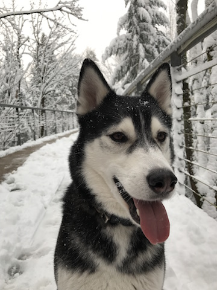

Hi! I'm Marilyn. I'm currently a student at Epicodus in the Evening Intro to Coding program. This page will serve as a portfolio for the coding work I do in the program, and beyond! Please check out the other tabs on this page to see my portfolio, some photos, and learn more about me. For now, please enjoy this picture of my adorable dog, Kili 
I am a graduate of Reed College with a degree in Classics. I came to Portland five and a half years ago all the way from New York city and fell in love with the community and landscape of the Pacific Northwest. When I'm not learning to code I spend my time hiking at the Sandy River Delta with my husky, Kili, or whipping up new vegan recipes. I love to read, especially modern fiction and historical biographies, and try to travel as much as I am able; my most recent trip was to Antarctica, and this spring I am heading to the Galapagos.
Some content in menu 2.
CONTENT